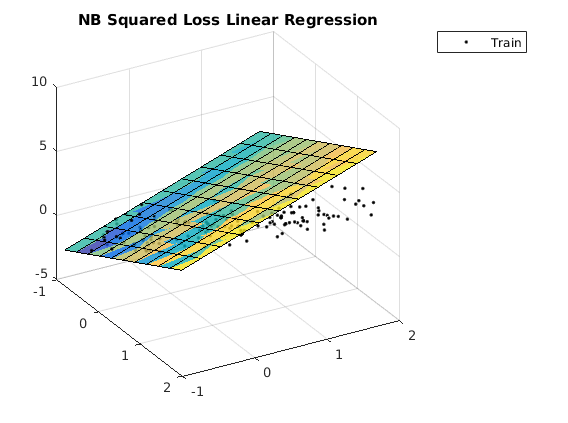

Contents
Description of demo_regression_NB
Linear regression by minimizing the squared loss under a Naive Bayes assumption. L2 squared loss shown as a baseline.
clear all close all generateData_3D
usage of naive Bayes regression
options_nb = []; options_nb.addBias = 1; model_nb = ml_regression_NB(Xtrain, ytrain, options_nb); yhat_nb = model_nb.predict(model_nb, Xtest); testError_nb = mean(abs(yhat_nb - ytest)); fprintf('Averaged absolute test error with %s is: %.3f\n', ... model_nb.name, testError_nb); figure; plotRegression2D(Xtrain, ytrain, model_nb); view(60, 30);
Averaged absolute test error with NB Squared Loss Linear Regression is: 1.111
usage of L2 regression
options_l2 = []; options_l2.addBias = 1; model_l2 = ml_regression_L2(Xtrain, ytrain, options_l2); yhat_l2 = model_l2.predict(model_l2, Xtest); testError_l2 = mean(abs(yhat_l2 - ytest)); fprintf('Averaged absolute test error with %s is: %.3f\n', ... model_l2.name, testError_l2);
Averaged absolute test error with Squared Loss Linear Regression is: 0.155
figure; plotRegression2D(Xtrain, ytrain, model_l2); view(60, 30);